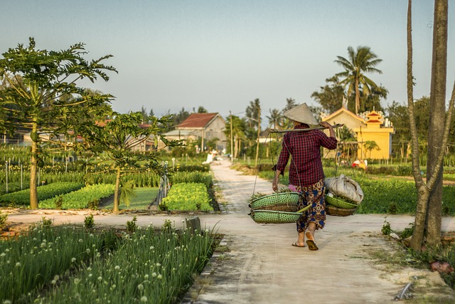
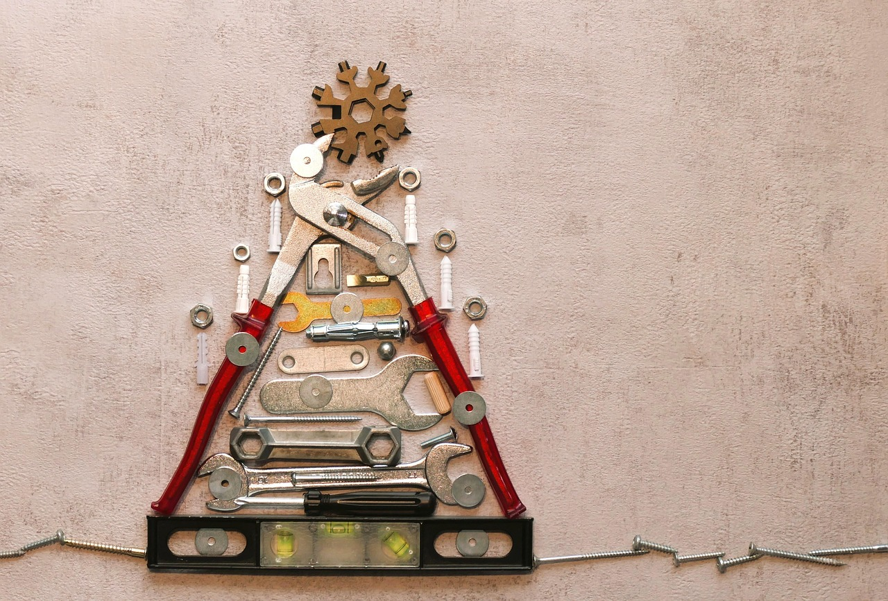
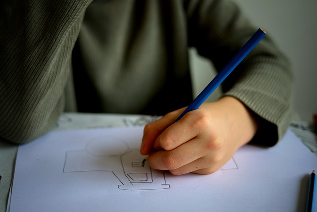

Uma mulher caminha de costas por um caminho rural entre campos agrícolas, transportando cestos suspensos numa vara de bambu ao ombro.
Horta Acessível
Hortas comunitárias com canteiros elevados e trilhas largas, para que pessoas com diferentes necessidades possam plantar,
colher e aprender juntas.
Sustentabilidade · em andamento

Arranjo triangular de ferramentas e ferragens — alicate, nível, chaves e parafusos — dispostos sobre fundo bege.
Oficinas de Reciclagem Inclusiva
Oficinas de reaproveitamento de materiais, com instruções em texto, imagem e Libras, gerando renda e consciência ambiental.
Impacto social · em andamento

Criança a desenhar com um lápis azul num papel em branco.
Escola Sem Barreiras
Formação de professores e adaptação de materiais didáticos para tornar a sala de aula acessível a todos os estudantes.
Educação · concluído